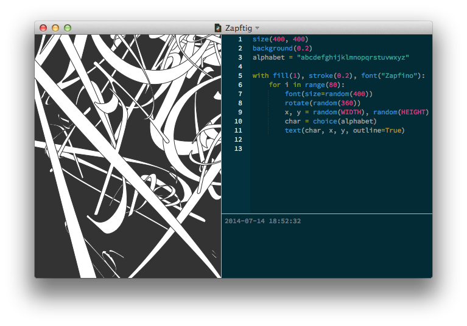

Variables often store pieces of text, called strings, that will be drawn to the screen.
When a piece of text, a string, is assigned to a variable, it needs to be wrapped in quotes; it needs to start and end with a quote. Otherwise PlotDevice might think the piece of text is the name of a variable, or something else.
Consider the following example:
hello = 20 string = hello print string >>> 20 string = "hello" print string >>> hello
Strings are lists of characters
A string is like a list of individual characters. You can access each character in the string by putting the "index" number in brackets. You can also access substrings by passing a start- and end-index spearated by a colon. Note that just like "slices" of a list, the end-index is not included in the sub-range returned.
alphabet = "abcdefghijklmnopqrstuvwxyz" print alphabet[0] # 'a' print alphabet[-1] # 'z' print alphabet[:4] # 'abcd' print alphabet[1:4] # 'bcd' print alphabet[-3:] # 'xyz'
The choice() command selects either a random element from a list or a random character from a string (depending on which kind of value you pass to it). In the example below, we use choice() and random() to select 80 random characters from the alphabet and scatter them over the screen at random positions, sizes, and orientations.

Manipulating strings
Strings have a number of very useful methods:
- string.upper(): returns the string in uppercase.
- string.lower(): returns the string in lowercase.
- string.title(): returns the string with the first character of each word capitalized.
- string.capitalize(): returns the string with the first character capitalized.
- string.find(text, start=0): returns the index position of text in the string.
- string.replace(old, new): replaces all old text in the string with new
- string.split(): returns the string as a list of words.
- string.join(list): concatenates a list of words.
Strings can be converted to uppercase and lowercase with the upper() and lower() methods, or have the first character capitalized with capitalize. Remember, these are methods, so instead of saying str = upper(str) you need to say str = str.upper().
str = "Kumquats, Kumquats! I must have my Kumquats! - Oscar Wilde" str = str.upper() print str >>> KUMQUATS, KUMQUATS! I MUST HAVE MY KUMQUATS! - OSCAR WILDE
The replace() method is especially useful when you want to filter mistakes from the string, or when you want to alter portions of the content:
str = "Something's rotten in the state of Denmark."
str = str.replace("in", "in, like, ")
str = str.replace(".", " dude.")
str = str.replace("rotten", "way uncool")
print str
>>> Something's way uncool in, like, the state of Denmark dude.
If your search & replace needs are more complex, Python has a powerful Regular Expressions library available to you. Add import re to the top of your script and you'll have access to useful methods like:
- re.search(regex, str): return a match if the pattern was found in str or
Noneif it wasn't. - re.sub(regex, new, orig): return a string derived from orig in which each occurrance of a pattern is replaced with new.
- re.split(regex, str): return a list of substrings, using the pattern to divide the original string.
Quotes in quotes
Text strings often contain quotes characters as content, especially if the text contains dialogue. When PlotDevice examines the string and encounters such a quote, it would logically assume that the string is terminated here.
For instance, the following example won’t work. PlotDevice sees "(On his death bed): " as a complete string followed by garbage statements it doesn’t understand:
str = "(On his death bed): "Those curtains are hideous." - Oscar Wilde"
Python allows you to take your pick of either double- or single-quotes when defining a string. Whichever one you start the string with will also be used for determining where the string ends. Since double-quotes are part of the content of our string, we could choose to wrap it in single-quotes (or vice versa):
str = '(On his death bed): "Those curtains are hideous." - Oscar Wilde' str = "You can't you won't and you don't stop."
But if our string contains both kinds of quotes, this approach doesn't help us. For these cases we can use triple-quotes to delimit the string and mix-and-match quotation marks within it:
str = """John Cage's 4'33" (performed by the Boston Typewriter Orchestra)"""
Triple-quoted strings are also unique in being able to span multiple lines. Each carriage return will be converted to a newline character in the string it assigns. Single- and double-quoted strings must begin and end on the same line of your script. If you want to include line breaks in a non-triple-quoted string, use the ‘escape’ code for the newline character: "\n".
String formatting
We've seen that the print statement allows you to combine multiple variables when generating output. It even adds a space character between terms separated by commas. But mixing strings and values like this gets hard to edit as your code gets more complex. An alternative approach is to use ‘string interpolation’ to generate a new string with your values inserted at specific locations according to a template.
Python has two syntaxes for this: the ‘new’ style using the string's format() method, and the ‘old’ style using printf-style escapes and the % operator. Personally, I still prefer the older approach, but your mileage may vary.
Here's an old-style formatting example. The basic usage is template % values. If you're inserting multiple values, be sure to wrap them in parentheses separated by commas:
pastry = 'pie' num = [4, 20] price = 12.5 str = '%i & %i blackbirds baked in a %s: $%0.2f' % (num[0], num[1], pastry, price) print str >>> 4 & 20 blackbirds baked in a pie: $12.50
If you want your string to contain a literal "%" character, put a "%%" in your format instead:
print "(plus %i%% sales tax)" % 5 >>> (plus 5% sales tax)
File input
When you’re going to use long paragraphs of text, it’s better to store the text in a separate text file and assign that to a variable, this keeps your script clean, and you can edit the text separately from the script.


Simply put the text in TextEdit, make it plain text, and import it into your script with the open() command.
Unicode characters
Unicode is a character system that allows computers to use symbols from all of the writing systems in the world. If you’re going to use for example suomi or Hebrew in the output of your script, you’ll have to know about Unicode.
The first thing to make sure is that the typeface you are going to use includes Unicode characters, so the text can be drawn in the font. Usually, large font families like Helvetica include Unicode for almost any Unicode character.
Next, you’ll have to tell PlotDevice that a piece of text includes special characters. This is as simple as adding a ‘u’ to the front of the string quotes.
str = u"?אתה מדבר אנגלית" text(str, 50, 200)

When you are going to import text from a text file there are two things to look out for. First, the text file needs to saved as Unicode. In TextEdit, apply the plain text format and when you save it, select ‘Unicode (UTF-8)’ from the Plain Text Encoding list.

Then when you import the contents of the file into PlotDevice, you’ll have to decode the text from UTF-8 into unicode:
str = open("hebrew.txt").read()
str = str.decode("utf-8")
align(RIGHT)
text(str, 100, 200)
PlotDevice provides a read() command that does the file i/o and unicode conversion for you. By default it will attempt to decode the file as UTF-8, but if you pass an optional encoding argument you can override this.
str = read("hebrew.txt")
str = read("ozu.txt", encoding="shift-jis")